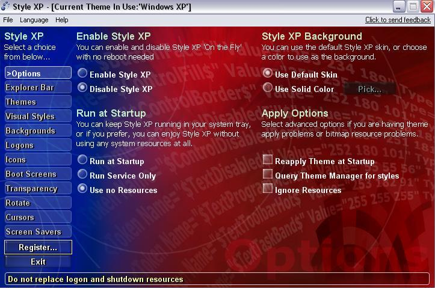
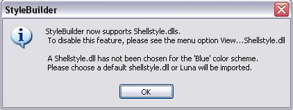
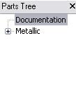
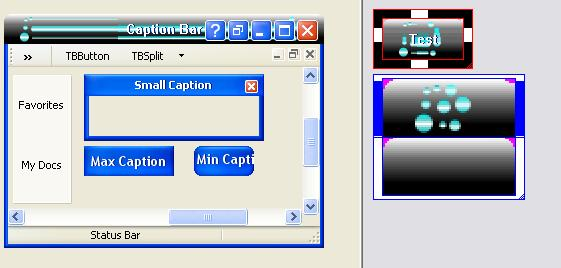
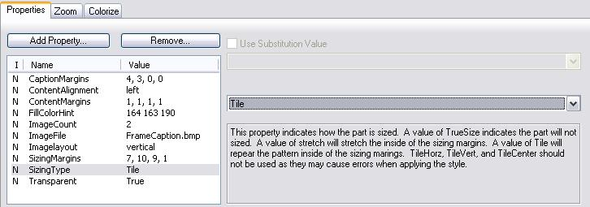
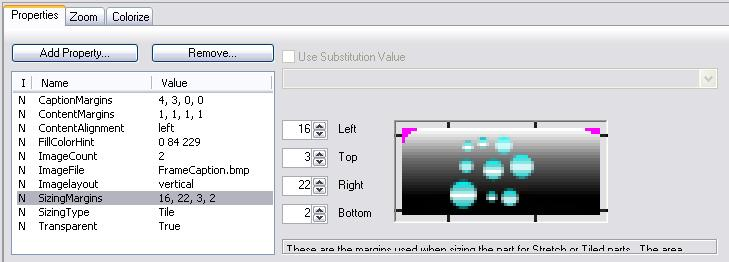
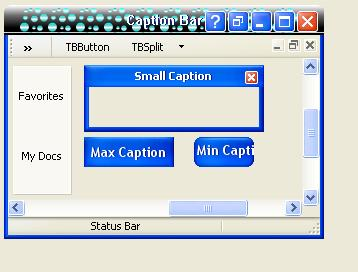

Aujourd'hui, je vais vous apprendre à créer un thème Windows ! Grâce à un logiciel qui vous facilitera la tâche (en partie).
Alors déjà, voici ce qu'il vous faudra avant que l'on se lance : un logiciel de graphisme (plus avancé que Paint, de préférence...), tel que Photoshop ou Paint Shop Pro.
Téléchargez-les et installez-les dans l'ordre. Il va falloir paramétrer StyleXp pour qu'il ne vous gêne pas à chaque démarrage : paramétrez-le comme sur cette image :

Maintenant, nous allons pouvoir nous lancer dans la création de thèmes. :)
Maintenant, cliquez sur File -> New. Créez un nouveau répertoire dans votre disque dur, sélectionnez-le puis cliquez sur "Ok". Il vous affichera peut-être ceci :

Cliquez sur Ok.
Ensuite, il va vous afficher une autre fenêtre, vous demandant de sélectionner un shell : faites ok sans rien toucher, il va vous remettre la première fenêtre, faites à nouveau Ok, ... cela encore une, deux ou trois fois, puis il va arrêter de vous harceler avec :lol: .
Maintenant, si vous voulez un thème avec UN seul style (metallic , blue...), supprimez-en deux de ceux déjà affichés. (Si vous voulez vous inspirer de l'un d'entre eux, gardez celui que vous aurez choisi.)
Si vous voulez plusieurs styles pour votre thème, gardez-en deux ou gardez les trois.
Le thème est créé :) : maintenant, nous allons commencer par lui donner un nom :

Cliquez dans l'arborescence sur Documentation.
Je vous laisse remplir les champs (auteur, date, version, nom, ...) :
Allez dans le dossier dans lequel vous avez créé le thème, puis dans le sous-dossier portant le nom du style que nous allons modifier : vous vous retrouvez dans un dossier plein d'images PNG et BMP.
Laissez le dossier ouvert et retournez à StyleBuilder.
Choisissez une partie du thème à éditer :
Nous allons commencer par Windows & toolbar (en gros, les fenêtres ...).
Vous avez quelque chose de semblable à l'écran. Je vais vous montrer les parties de votre écran auxquelles vous devez vous intéresser :
Rouge : les éléments qui composent les fenêtres. Bleu : les propriétés de l'élément. Jaune : le nom de l'image qui correspond à l'élément.
Restons sur l'élément Caption, c'est le haut des fenêtres.
Pour commencer, vous allez modifier l'image de l'élément Caption (framecaption.bmp) dans le dossier du style grâce à votre éditeur d'images.
Modifions notre image, voici un exemple simple :
Si jamais vous avez mis par exemple un motif, exemple :
Voici ce que cela donnerait :

(et l'aperçu que donne StyleBuilder est exact !)
Mon motif ne se répète pas ! Que faire ? :'(
Nous allons modifier deux propriétés de cet élément : SizingType et SizingMargins.
Dans SizingType, vous allez mettre tile :

Et dans SizingMargins, nous allons déplacer certaines choses sur l'image :

Déplacez votre curseur sur l'image, et vous verrez apparaître des lignes quand votre curseur passe entre les traits noirs autour de l'image : cliquez à ce moment-là et déplacez les barres de façon à encadrer votre ou vos motif(s), et voici ce que ça donne :

C'est quand même mieux, hein :D ?
Maintenant, vous n'avez plus qu'à faire à peu près la même chose avec les autres éléments qui composent le style.
En essayant de modifier certaines choses, vous trouverez peut-être d'autres fonctions intéressantes ;) .
Vous avez fini votre oeuvre ? Vous voulez certainement la faire connaître ? Eh bien voici les dernières choses à savoir :
1- Comment préparer le thème pour l'utiliser et le partager ? 2- Où placer les thèmes dans Windows ? 3- Que doivent posséder les personnes voulant utiliser le thème ?
Cochez Include snapshots si ce n'est pas déjà fait, et cliquez sur Ok.
Votre thème est compilé, il ne vous reste plus qu'à aller dans le dossier dans lequel votre thème a été créé, de prendre l'archive .zip du même nom que votre thème et de la partager :) .
2- Vous prenez l'archive que l'on vient de créer
Vous devez extraire son contenu dans :
C:\WINDOWS esources hemes
Pour l'appliquer, faites un clic droit sur votre bureau et cliquez sur Propriétés, allez dans l'onglet Apparence ou Thèmes.
3- Prérequis pour l'utilisation de votre thème
Ceux qui veulent utiliser votre thème doivent juste télécharger le uxtheme.dll modifié, l'installer, et redémarrer leur ordinateur ;) .
Voilà, vous avez maintenant le minimum de connaissances pour créer un bon thème assez personnalisé, montrez vos talents et relookez Windows. ;)
{kind=link}
{kind=link}
{kind=link}
{kind=link}
{kind=link}